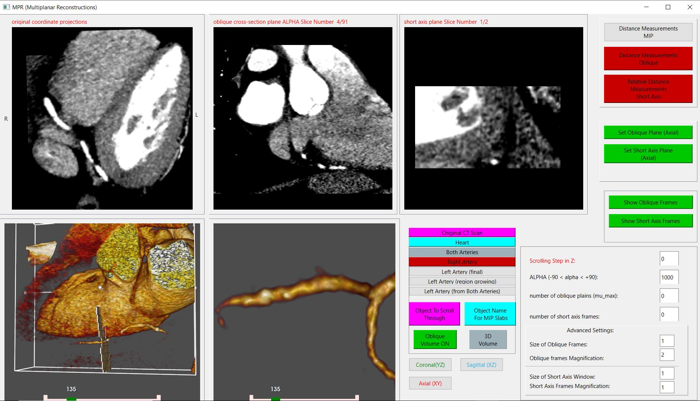

Возможности инструментов построения мультипланарных реконструкций (MPR)
Может быть сгенерирована любая секущая плоскость исходного набора объемных данных: аксиальная, сагиттальная и коронарная, плоскости, ориентированные параллельно или ортогонально межжелудочковым или атриовентрикулярным бороздкам, а также любые другие косые срезы.
Если из-за сложного хода коронарных артерий интерпретация аксиальных изображений затруднена, лучшее понимание может быть получено с помощью мультипланарных реконструкций.
Для визуализации извитой коронарной артерии имеется возможность увеличить толщину MPR среза.
MPR удобны для быстрой и точной отрисовки изображений исследуемых структур без их сегментации и с сохранением точности при измерениях расстояний.
Аксиальные и MPR-изображения также рекомендуются для обнаружения некоронарных аномалий.
